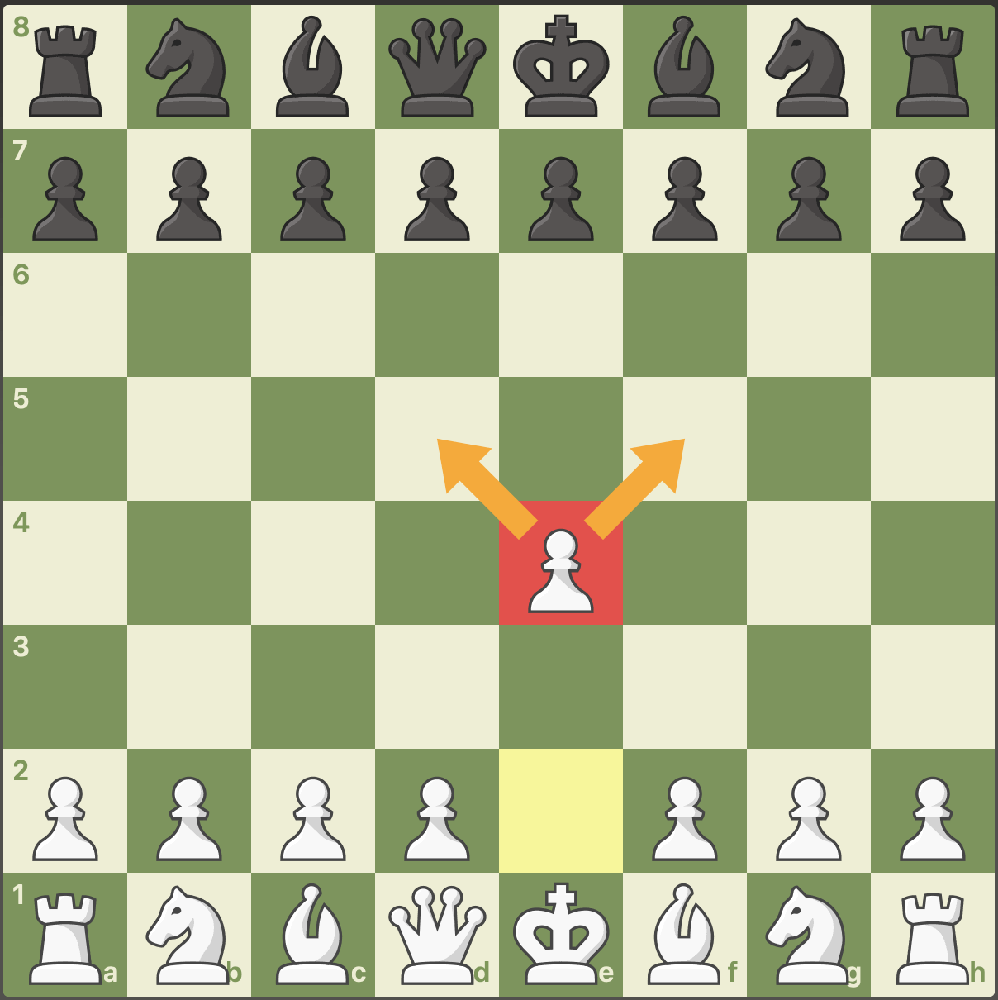
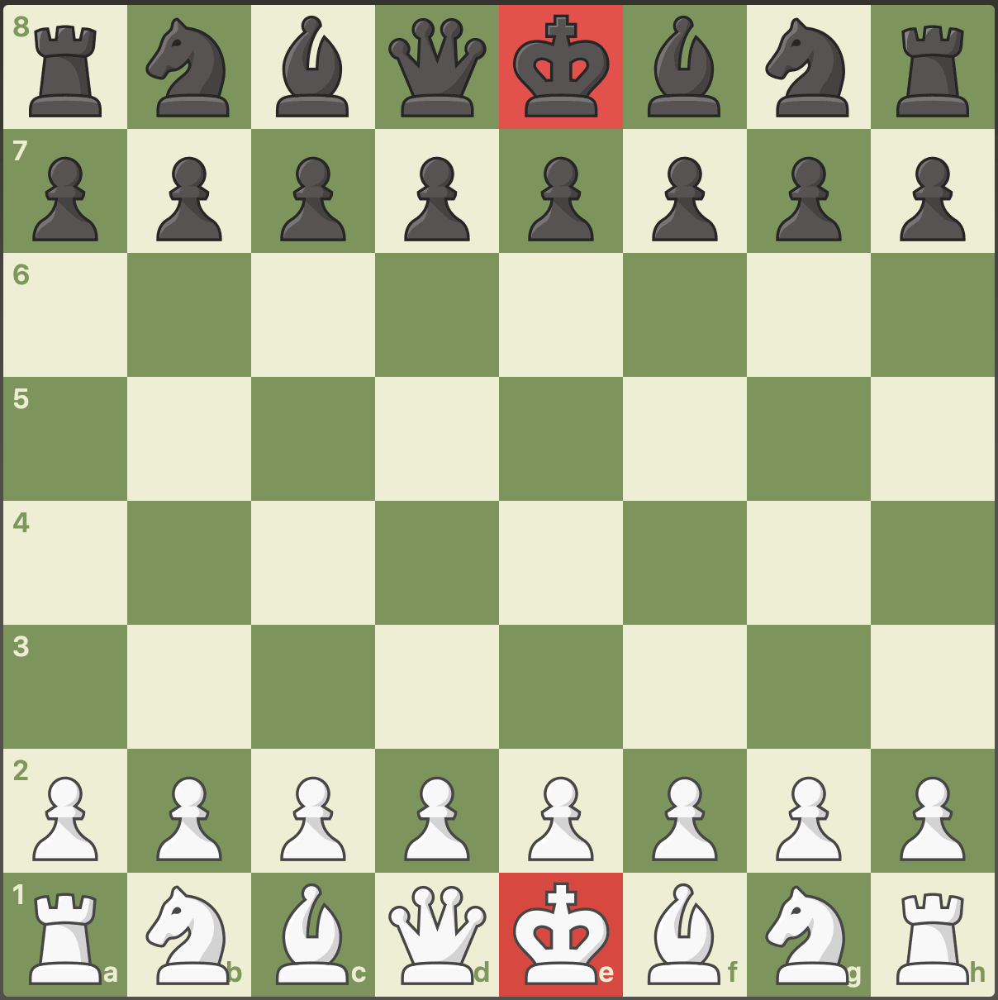

What Are The Chess Pieces?
The chess pieces are what you move on a chessboard when playing a game of chess. There are six different types of chess pieces. Each side starts with 16 pieces: eight pawns, two bishops, two knights, two rooks, one queen, and one king. Let's meet them!
Pawn
Bishop
Knight
Rook
Queen
king
How The Chess Pieces Move:
• King - Moves one square in any direction. • Queen - Moves any number of squares diagonally, horizontally, or vertically. • Rook - Moves any number of squares horizontally or vertically. • Bishop - Moves any number of squares diagonally. • Knight - Moves in an ‘L-shape,’ two squares in a straight direction, and then one square perpendicular to that. • Pawn - Moves one square forward, but on its first move, it can move two squares forward. It captures diagonally one square forward.
Now, let's explore each chess piece in more detail.
The Pawn
When a game begins, each side starts with eight pawns. White's pawns are located on the second rank, while Black's pawns are located on the seventh rank.
The starting position with pawns highlighted.
The pawn is the least powerful piece and is worth one point. If it is a pawn's first move, it can move forward one or two squares. If a pawn has already moved, then it can move forward just one square at a time. It attacks (or captures) each square diagonally to the left or right. In the following diagram, the pawn has just moved from the e2-square to the e4-square and attacks the squares d5 and f5.
pawn on e4 attacks the squares d5 and f5.
The Bishop
Each side starts with two bishops, one on a light square and one on a dark square. When a game begins, White's bishops are located on c1 and f1, while Black's bishops are located on c8 and f8.
The starting position with bishops highlighted.
The bishop is considered a minor piece (like a knight) and is worth three points. A bishop can move diagonally as many squares as it likes, as long as it is not blocked by its own pieces or an occupied square. An easy way to remember how a bishop can move is that it moves like an "X" shape. It can capture an enemy piece by moving to the occupied square where the piece is located.
The bishop moves in an "X" pattern.
The Knight
Each side starts with two knights—a king's knight and a queen's knight. When a game starts, White's knights are located on b1 and g1, while Black's knights are located on b8 and g8.
Starting position with knights highlighted.
The knight is considered a minor piece (like a bishop) and is worth three points. The knight is the only piece in chess that can jump over another piece! It moves one square left or right horizontally and then two squares up or down vertically, OR it moves two squares left or right horizontally and then one square up or down vertically—in other words, the knight moves in an "L-shape." The knight can capture only what it lands on, not what it jumps over!
The knight moves in an "L" shape.
The Rook
Each side starts with two rooks, one on the queenside and one on the kingside. All four rooks are located in the corners of the board. White's rooks start the game on a1 and h1, while Black's rooks are located on a8 and h8.
The starting position with rooks highlighted.
The rook is considered a major piece (like the queen) and is worth five points. It can move as many squares as it likes left or right horizontally, or as many squares as it likes up or down vertically (as long as it isn't blocked by other pieces). An easy way to remember how a rook can move is that it moves like a "+" sign.
The rook moves like a "+" sign.
The Queen
The queen is the most powerful chess piece! When a game begins, each side starts with one queen. The white queen is located on d1, while the black queen is located on d8.
The starting position with queens highlighted.
The queen is considered a major piece (like a rook) and is worth nine points. It can move as many squares as it likes left or right horizontally, or as many squares as it likes up or down vertically (like a rook). The queen can also move as many squares as it likes diagonally (like a bishop). An easy way to remember how a queen can move is that it moves like a rook and a bishop combined!
The queen moves like a rook and bishop combined.
King
The king is the most important chess piece. Remember, the goal of a game of chess is to checkmate the king! When a game starts, each side has one king. White's king is located on e1, while Black's king starts on e8.
The starting position with the kings highlighted.
The king is not a very powerful piece, as it can only move (or capture) one square in any direction. Please note that the king cannot be captured! When a king is attacked, it is called "check."

The king can move to the highlighted squares.
Conclusion
You now know what the chess pieces are, where to place them to start a game, how the chess pieces move, and how they are valued! Enjoy your newfound knowledge of the chess pieces and put it into practice by playing a game in Live Chess.